Now it's time to snap back to reality.
Neuerdings habe ich HTML, CSS und JS für mich entdeckt und arbeite seit dem 10. April 2026 an dieser Seite.
Aber das dokumentiere ich lieber dann bei „Lernen“.
Ich mag nette interaktionen mit anderen Mitmenschen. Einen lockeren Umgang und eine schöne gemeinsame Zeit.
Diese Section soll einen Einblick in meine Freizeit geben. Es ist eine bunte Mischung aus allem möglichen, was mir Freude bereitet.
Ehrlich・Direkt・Humorvoll・Kreativ・Abenteuerlustig・Hilfsbereit・Sozial
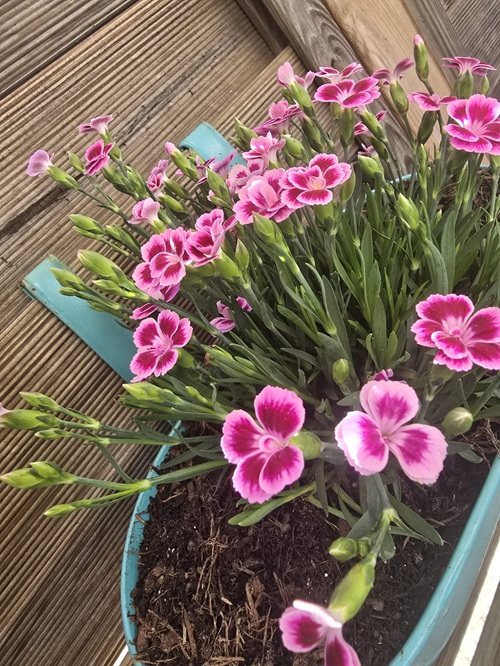
Ich habe manchmal das Bedürfnis, fremden Menschen zu helfen, ihre Gärten zu pflegen. Das war die erste Pflanze die ich umtopfen durfte.
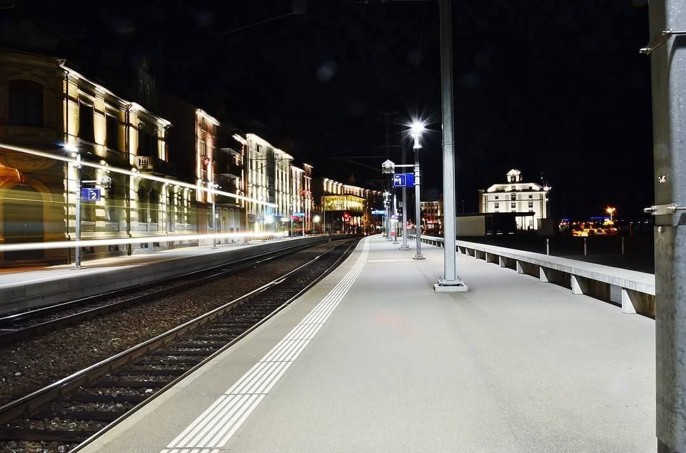
Auch wenn ich vieles namentlich nicht kenne. Ich mag Menschen errichtete Bauwerke. - Rorschach Hafen
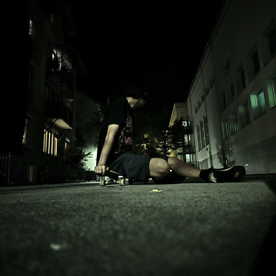
Manchmal ist skateboarden genau das was ich brauche.
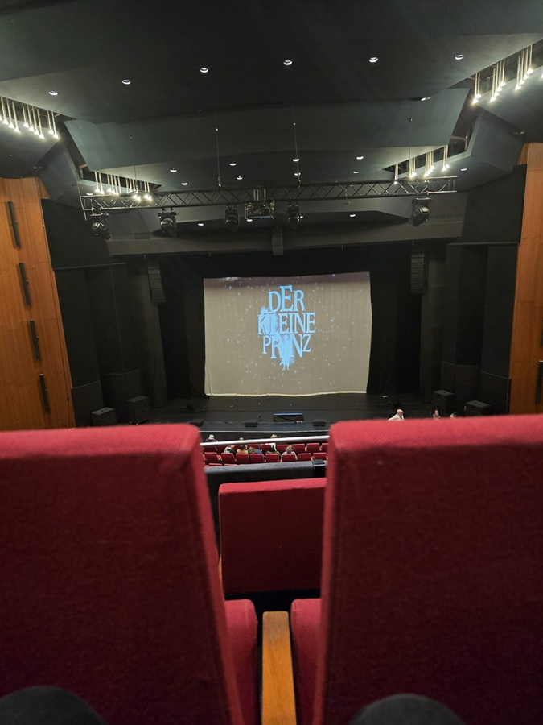
Mein absolutes Lieblingsbuch wurde in ein Musical verwandelt. Dafür bin ich nach Hannover gereist.
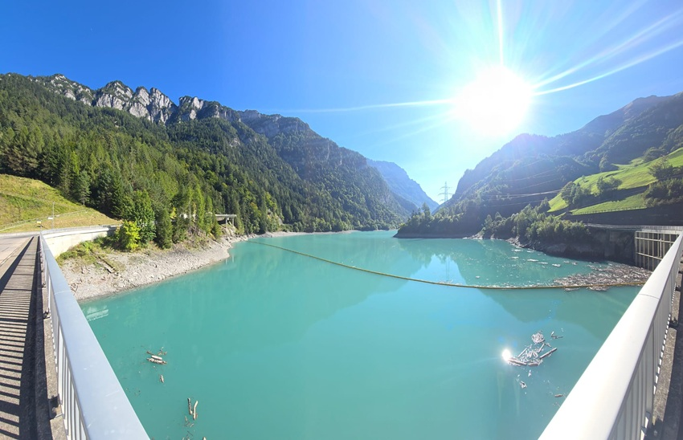
Zwischen Bergen und Tälern... Ich gehe gerne mal spazieren.
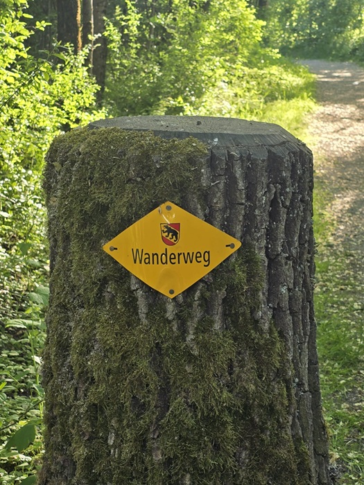
Geboren wurde ich in Kanton Bern. Deshalb verbringe ich auch gerne mal Zeit in der Heimat.
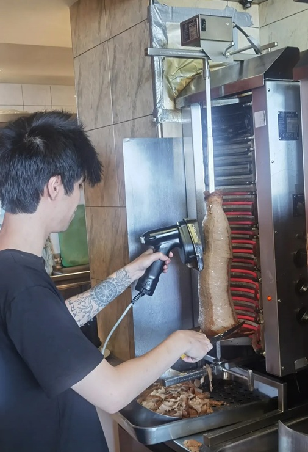
Ich mag zwar keinen Döner, aber ich habe keine Scheu davor zu Fragen, wenn ich was ausprobieren will. In diesem Fall: Schneiden.
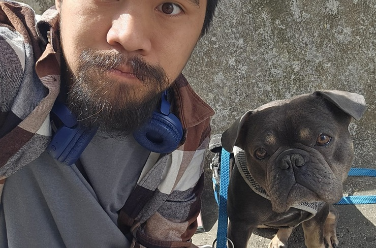
Ich bin ein absoluter Tierfreund und möchte eines Tages einen eigenen Hund haben. Am liebsten einen Berner Sennenhund!
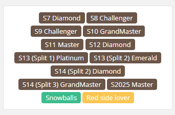
Auch wenn ich das Spiel nicht mehr spiele. Meine Mehrjährige Erfahrung in der Proliga bezeugen: Teamplay, Ausdauer, strategisches Denken, Kommunikation und die Fähigkeit die Führung zu übernehmen.
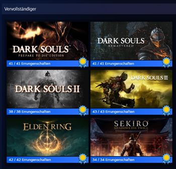
Ich bin ein Fan von FromSoftware, die Spielereihe zeigt: Ich behalte auch in schwierigen Situationen den Überblick und bleibe gelassen. Zudem die Motivation mich ständig zu bessern.
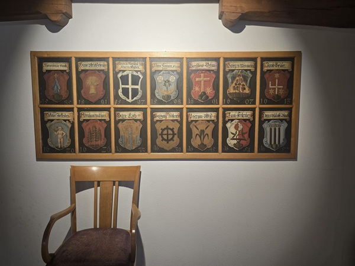
Altstädte anzuschauen kann ziemlich entspannend sein. Ich mag die Atmosphäre dieser Orte. Besonders wenn man die Inneneinrichtung bewundern kann.
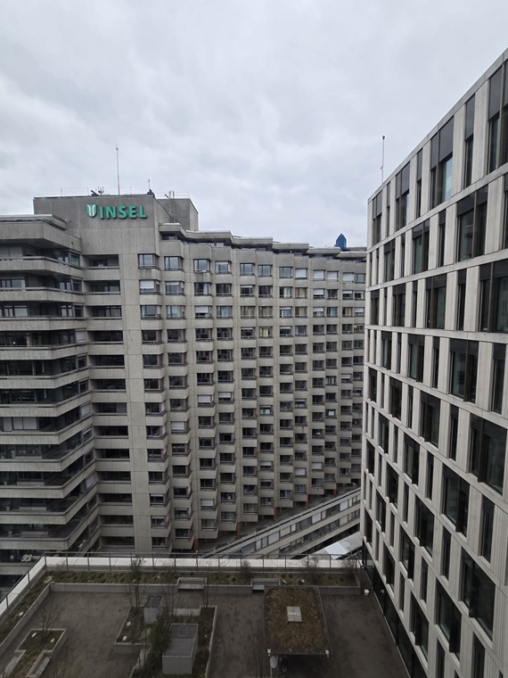
Ich bin ein grosser Bewunderer von Krankenhäusern. Es ist faszinierend, wie sie funktionieren und wie Menschen geholfen wird. Eines Tages möchte ich in einem Krankenhaus arbeiten.